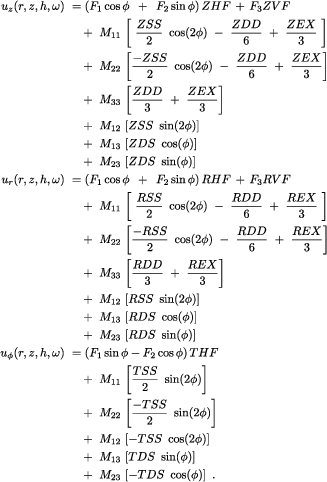
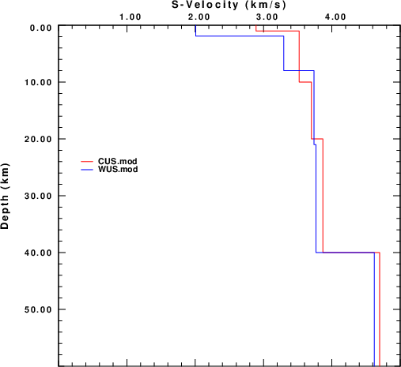
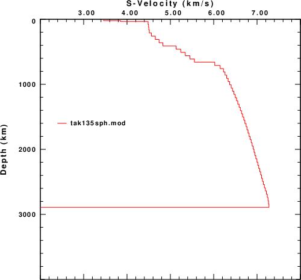
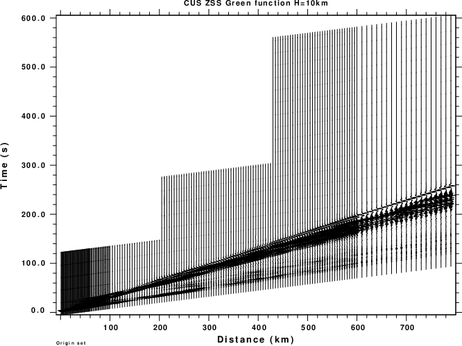
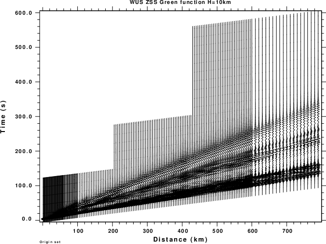
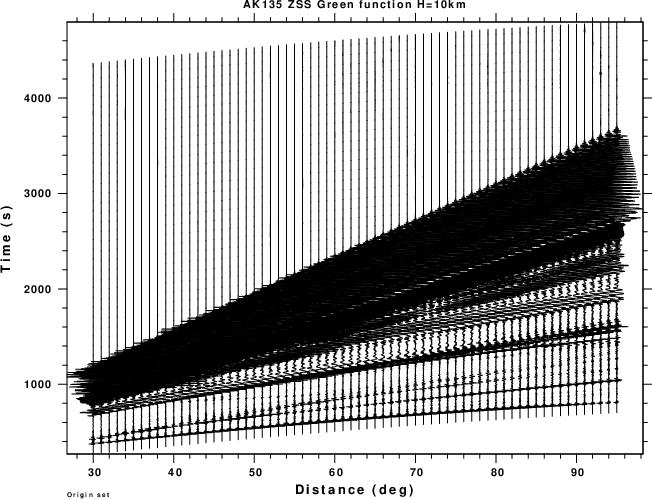

This tutorial provides the codes and processing scripts to compute the Green's functions for two regional velocity models and one teleseismic model that are used for moment tensor inversion.
The Green's functions are computed using the Computer Programs in Seismology programs hprep96, hspec96, hpulse96, f96tosac, saclhdr and time96. The codes are part of a larger package but the versions are included here
The Green's functions are identified by specific names as follow:
| Green's function | Green's function | ||||||||||
|---|---|---|---|---|---|---|---|---|---|---|---|
| ZDD - vertical component 45o dip-slip | ZEX - vertical component isotropic expansion | ||||||||||
| RDD - radial component 45o dip-slip | REX - radial component isotropic expansion | ||||||||||
| ZDS - vertical component 90o dip-slip | ZVF - vertical component downward point force | ||||||||||
| RDS - radial component 90o dip-slip | RVF - radial component downward point force | ||||||||||
| TDS - transverse component 90o dip-slip | ZHF - vertical component horizontal point force | ||||||||||
| ZDS - vertical component vertical strike-slip | RHF - radial component horizontal point force | ||||||||||
| RDS - radial component vertical strike-slip | THF - transverse component horizontal point force | ||||||||||
| TDS - transverse component vertical strike-slip |
The first letter indicates the component: Z is positive up, R is positive away from the source, and T is positive in a direction to the right as the signal propagates. For signal propagating to the North, the Z, R and T are Up, North and East, respectively.
To form the modeled ground motion the following equations are used:
|  |
Here the uz, ur and uφ are the vertical (positive up), radial (positive) away and transverse motions, respectively. The Mij=Mji moment tensor elements are:
| M11 = Mxx = Mθθ | M12 = Mxy = -Mθφ | M13 = Mxz = -MRθ |
| M22 = Myy = Mφφ | M23 = Myz = -MRφ | M33 = Mzz = MRR |
The programs used here solve the wave equation in a cylindrical coordinate system for a layered, isotropic halfspace. The integrals are given in Equation (1).
Numerically the integrals are approximated by the summations of Equation (2). The first summation is a discrete Fourier transform. The second is an approximation to the Fourier-Bessel transform. The discretization introduces periodicity in the time and space domains that must be understood so that the results yield synthetics without artifacts.
The length of the times series is NΔt seconds. The wavenumber sampling Δk is related to the distance r. In essence the computational effort is on the order of NJmax, but the Jmax is taken proportional to the highest frequency.
An important implication is that if the total length of the time series is fixed and it is desired to change the sampling from Δt to Δt/2, the computational effort will increase by about a factor of 4.
Download the source code and unpack using the command
gunzip -c source.tgz | tar xf -
This command will the bin for the excutables and the Source directory for the programs to be compiled.
The directory Source will contain the following files:
csstime.c csstime.h f96subf.f f96tosac.f hprep96.f hpulse96.f hspec96.f igetmod.f lgstr.f Makefile.LNX Makefile.LNXllvm Makefile.OSXM Makefile.OSXMllvm mchdep.f mgtarg.f mnmarg.f saclhdr.c sacsubc.c sacsubc.h sacsubf.f tgetmod.f time96.f
The makefiles are named according to the platform. However in these specially constructed makefiles, Makefile.LNX and Makefile.OSXM are identical as are Makefile.LNXllvm and Makefile.OSXMllvm. The major difference lies in the compilers used. Makefile.LNX and Makefile.OSXM used the gcc and gfortran complers, while Makefile.LNXllvm and Makefile.OSXMllvm use the LLVM clang and flang compilers. As of the date that this tutorial was created, the version numbers of these compilers are
gcc Version 14.2.0_1 gfortran Version 14.2.0_1 clang Version 18.1.3 flang Version 19.1.7
The clang and flang version numbers differ because these are the current versions on different platforms. The important point to make, is that the codes using in creating the Green's functions meet current standards.
Assuming that the gcc and gfortran compilers are installed, the following will install the executables in the bin directory.
cd Source make -f Makefile.OSXM all
and the following executables will be placed into the bin directory
f96tosac hprep96 hpulse96 hspec96 saclhdr time96
The hprep96 creates the input for the wavenumber integration program hspec96, the hpulse96 applies the inverse Fourier transform and the simple source time function. The f96tosac converts the output of hpulse96 to a Sac file format. The saclhdr extracts specifice parameters from the Sac file header and time96 is used to determine the first P-arrival time for a given velocity mode, source depth and epicentral distamce.
The command line syntax of these executables can be obtained on-line by invoking them with the -h flag, e.g.,
hprep96 -h
An example of the information in the Sac file header is the following:
0555980100.ZSS (0):
NPTS 4096 B 434.11
E 4529.11 DELTA 1
DEPMAX 1.865648e-09 DEPMIN -1.843304e-09
DEPMEN -1.792233e-14 NZYEAR 1970
NZJDAY 1 NZHOUR 0
NZMIN 0 NZSEC 0
NZMSEC 0 KZDATE Jan 01 (001), 1970
KZTIME 00:00:00.000 O 0
A 534.1147 T0 964.6018
KSTNM GRN21 KCMPNM ZSS
STEL 0 DIST 5559.8
AZ 0 BAZ 180
GCARC 50.0004 EVDP 10
CMPAZ 0 CMPINC 0
TIMMAX 1467.11 TIMMIN 1526.11
NVHDR 6 NINF 0
NHST 0 IFTYPE ITIME
IZTYPE IB LPSPOL TRUE
LOVROK TRUE LCALDA FALSE
LHDR5 FALSE KEVNM SYNTHETIC
KO O KA P
KT0 SV
This is mentioned here since this information will be required of the Sac files are incorporated into another format, e.g., HDF5.
This tutorial considers two regional velocity models, CUS and WUS, and the AK135 continental global model. These models are displayed in these figures.
| CUS and WUS models | AK135 model |
|---|---|
|  |  |
The following links provide the processing scripts. Unpack them, for example, with the command:
gunzip CUS.REG.tgz | tar xf - cd CUS.REG ls -F DODCTL* DOIT.WK* MKW* Model/ tDOIT.WK
There will be similarly named shells scripts for the other models. These scripts do the following:
In each directory there is a shell script named tDOIT.WK which generates the Green's functions for just one source depth of 10km. The next set of figures displays the record sections for the ZSS Green's function. The purpose is to show the distance samling and time series window as a function of distance. The selected time window is long enough to contain the entire signal, which is based on the expected time series length for the shallowest depth for which the short period surface waves appear late in the time window.
After such a test run, a new directory will appear with the name 0100 which indicates a source depth of 010.0 km. This naming will permit source depth directories for depths from 000.1 km to 999.9 km.
Within the directory for a given depth, there will appear the Green's functions required for a general moment tensor. The dfile, hspec96.dat and hspec96.grn files are left over from the computtions cna can be ignored. The naming convention for the Green's functions is the result of the f96tosac -G command which names the files as DDDDdHHHh.grn, which represents an epicentral distance of DDDD.d km and a source deoth of HHH.h km. For example, 009400100.TDS is the TDS Green's function for and epicentrla distance of 94.0km and a source depth of 10.0km.
To assist in pointing to a given set of Green's functions as a function of source depth and epicentral distance, a unique file with the name W.CTL is created within each source directory. This was created by the shell script MKW and invokes the helper program sacldhr to create simple output shch as
... 90 0.25 512 6.25 0 0100 009000100 92 0.25 512 6.5 0 0100 009200100 94 0.25 512 6.75 0 0100 009400100 96 0.25 512 7 0 0100 009600100 98 0.25 512 7.25 0 0100 009800100 ...
The entries on each line are the epicentral distance, sample interval, numebr of data points, time of first sample with respect tot he origin time, the directory name, and the file prototype. Thus at 94km, the following Green's functions were created:
009400100.RDD 009400100.REX 009400100.TDS 009400100.ZDD 009400100.ZEX 009400100.RDS 009400100.RSS 009400100.TSS 009400100.ZDS 009400100.ZSS
The source time function was convolved with the synthetics using the command
hpulse96 -V -p -l 1
For the CUS and WUS models, which are defined in units of km, km/s and gm/cm3, The Green's functions will be ground velocity in cm/s for a step-like moment source of 1.0x1020 dyne-cm. The source time function has a duration of 4Δt, or 1.0s, in this case. For the AK135 model, the Green's fucntions are created with a duration of 4.0s.
To give a relative sense of computation time, the tDOIT.WK in WUS.REG ran in about 25 minutes, while the tDOIT.WK in AK135.TEL took about 5 hours for one source depth.
Record sections from the test runs are shown in the next set of figures.
| CUS Regional Model |
|---|
|  |
| WUS Regional Model |
|  |
| AK135 Global Model |
|  |
As seen from the figures, the traces do not start at the origin time, but rather at some seconds before the first P-wave arrival. In addition the length of the regional waveforms is dependent on distance while the teleseismic waveforms are of fixed length. The reasons for these choises are computational speed and accurary.
After a successful test run, do the following:
cd CUS.REG ; DOIT.WK ; cd .. cd WUS.REG ; DOIT.WK ; cd .. cd AK135.TEL ; DOIT.WK ; cd ..